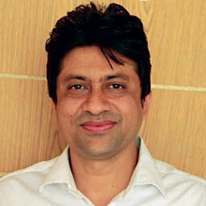
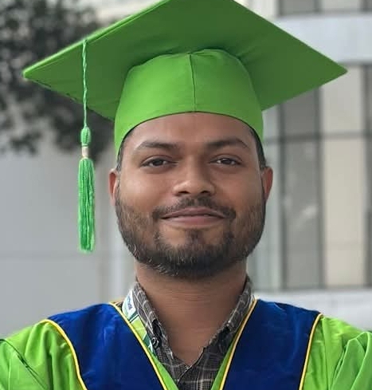
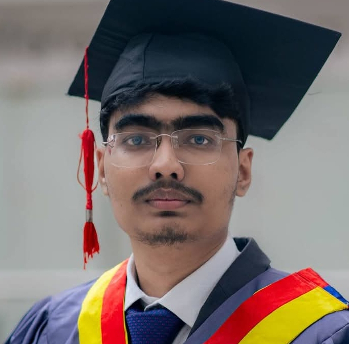
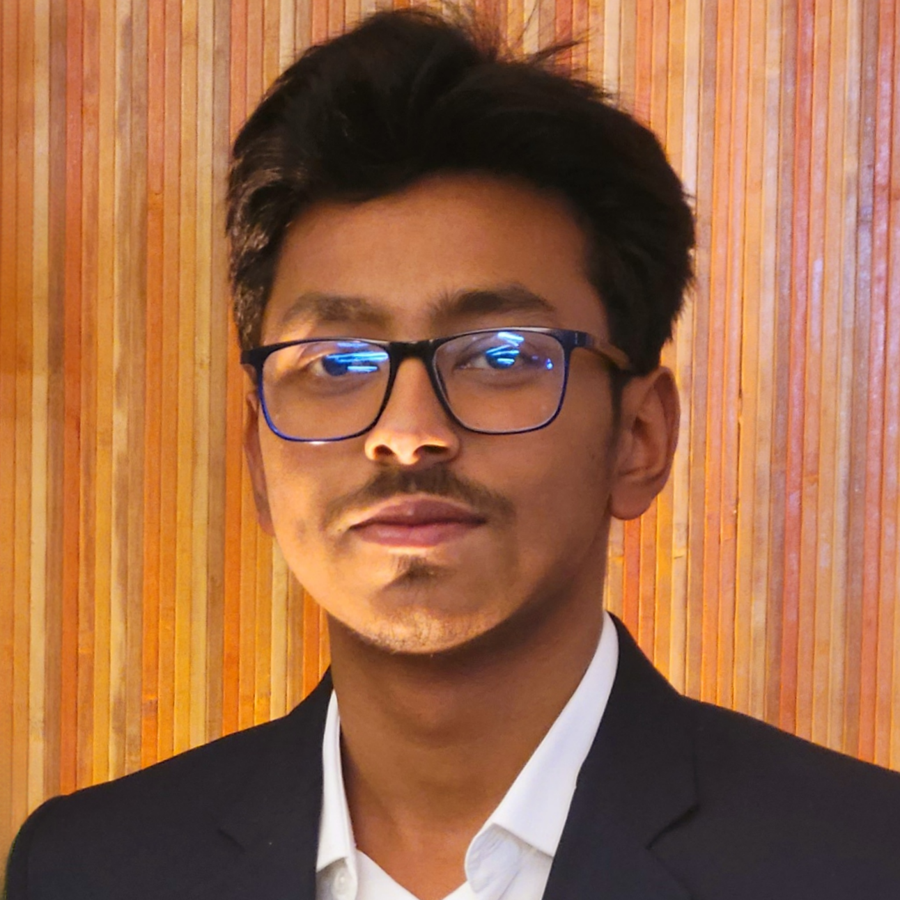

Lab Director
Dr. Sarwar Hossain Mollah founded the AI Research Lab and leads its overall research vision. He holds a PhD in Artificial Intelligence and has over 15 years of experience in AI.

Faculty Researcher
Asif specializes in AL Language Processing and has published over 30 papers in top AI conferences. He leads the AI research group within the lab.

Graduate Student
Nirob is pursuing his MSc in deep learning for medical imaging. His research focuses on early detection of diseases using AI-powered diagnostic tools.

Research Assistant
Redwan assists in computer vision projects involving medical image analysis. He is responsible for dataset collection, preprocessing, and model evaluation.